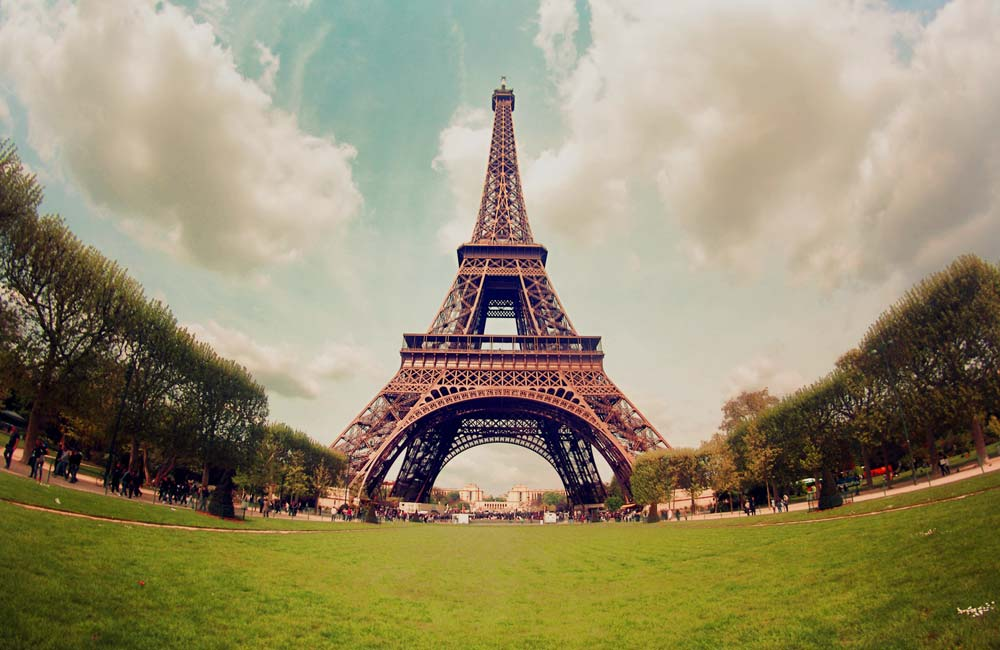
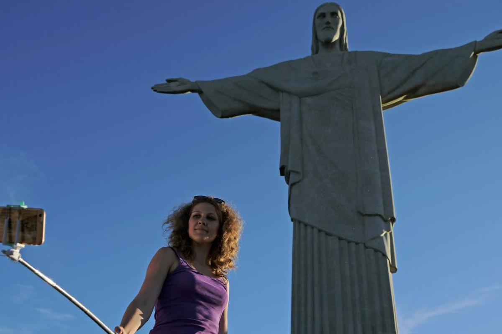
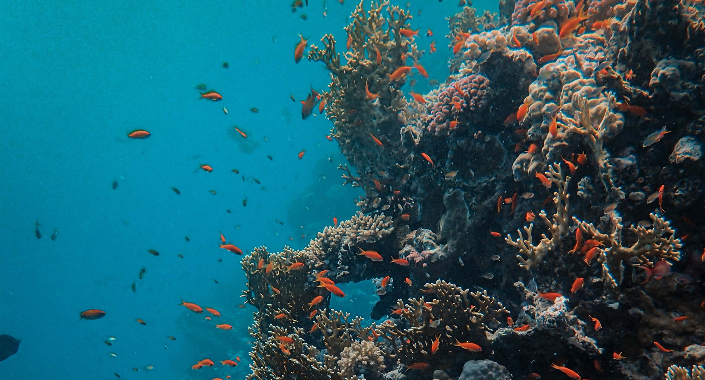
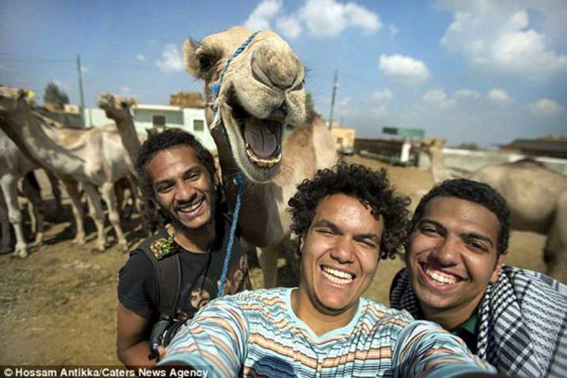
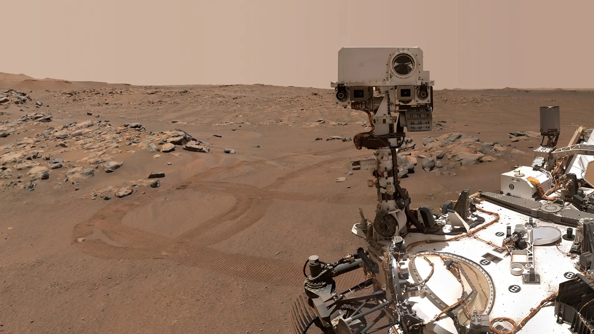

Para este trabajo, hemos llevado de viaje a nuestra chica del fondo de pantalla del ordenador, que ya estaba cansada de no hacer nada como fondo de pantalla y quería vivir aventuras en nuevos lugares, cabe decir que la hemos bendecido como Shaniqua.
Primero recortamos la figura de la chica y escogimos diferentes lugares para visitar.
En Paris la colocamos al lado de la torre effiel y le añadimos una bonita boina roja junto con una baguette, borrando la agenda que tenía en la mano. Luego fuimos a la India y visitamos una de las 7 maravillas del mundo moderno, el Taj Mahal, como en la foto que escogimos aparecia una mujer y nos daba pena quitarla, la hemos dejado al lado de Shaniqua y ahora son muy buenas amigas.
Seguimos el viaje en Rio de Janeiro, donde escogimos una foto en la que se esta haciendo un selfie al lado del gran Jesús, como en la foto original aparecía una mujer lo que hemos hecho ha sido borrarla y usar el mismo color del cielo para que desaparezca y poner a Shaniqua en su lugar. Además la vestimos con una bonita camiseta de Brazil.
Para la siguiente foto hemos viajado hasta el desierto del Sahara donde tras haber recortado a Shaniqua y haberla vestido con prendas favorables para el desierto, la hemos colocado al lado de unos pueblerinos de la zona muy majetes con su camello que se le ve muy feliz (le hemos puesto pestañas para hecerle más fabuloso).
Como Shaniqua quería explorar mas de la Tierra la llevamos a visitar los arrecifes del océano panthalassa, es decir, que la llevamos a traves del tiempo unos cuantos eones al pasado. Al no poder respirar la pusimos un traje de snorkel y al lado le pusimos un tully especie de aquellas épocas.
Cansada de la Tierra y viendo que no tenía futuro por culpa del ser humano. Shaniqua quiso irse de aquí asi que nosotros la llevamos a Marte con su traje de astronauta donde conoció a Perseverance, el vehículo robotizado encargado de explorar la superficie del plantea rojo.
Esta es la imagen original
En la primera imagen hemos recortado a shaniqua y la hemos puesto una baguette y boina png.

En la segunda hemos borrado a la señora que estaba y después coloreado la camisa de verde y puesto la bandera de Brasil, también movido el brazo.

En el océano hemos ajustado un traje a su figura y después puesto un tullymonstuo al lado después de hacer una corrección de color azul.

Luego hemos recortado a Shaniqua y puesto con su amiga.
La siguiente foto la hemos vestido con ropa para el desierto.

En Marte la hemos puesto dentro de un traje espacial.

Los demás detalles los hemos escrito a mano.